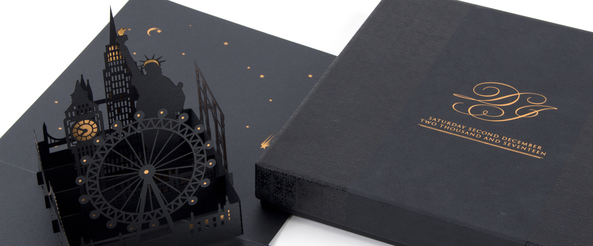

Bespoke Luxury Stationery
At Bigday we pride ourselves on our continually evolving, innovative portfolio of luxury invitations, event & business stationery. We are constantly creating new designs and striving for exciting ways to create perfection. Whether it’s a new creation or working with your theme, our aim is to bring your ideas to life. Incredibly lavish to low key, outrageous or traditional - Bigday has something to suit all tastes. Our in-house printing and design service ensures we can produce a bespoke, high quality product while maintaining control throughout the process.
Our twenty years experience has given us the expertise to amalgamate both modern and traditional printing techniques. Foiling, embossing, raised print, calligraphy and wax seals together with laser cutting/engraving, digital print and Perspex fabrication.
Our excellent customer service ethos ensures that Bigday’s Production Team work on a one-to-one basis with our clients to create a fabulous, bespoke, luxury product.
Just contact Bigday to organise a visit to our Radlett showroom or if you’re based too far from there, we will come and see you.
Phone: 01442 828100
Email: info@bigdaydesigns.co.uk